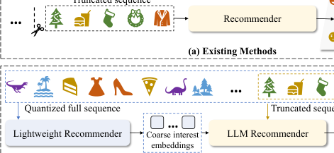
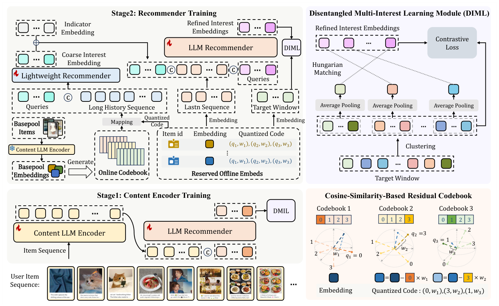

HyMiRec: A Hybrid Multi-interest Learning Framework for LLM-based Sequential Recommendation (面向 LLM 序列推荐的混合多兴趣学习框架)
- 会议/期刊: WWW 2026
- 作者与机构: Jingyi Zhou, Cheng Chen, Kai Zuo, Manjie Xu, Zhendong Fu, Yibo Chen, Xu Tang, Yao Hu（小红书 Inc.；复旦大学；北京大学）
- 推荐链路定位: 召回（工业系统多路召回中的一路，query-splitting 独立检索）
- 研究方向: 序列与会话推荐 / 大语言模型推荐
- 论文原文: https://arxiv.org/abs/2510.13738v2
- 开源代码: https://github.com/FireRedTeam/FireRedSeqRec
TL;DR (1分钟核心速览)
针对 LLM 序列推荐的两大痛点——高 QPS 迫使历史序列被截断（长程兴趣丢失）、单 embedding 下一物品预测无法表达多兴趣——HyMiRec 提出两阶段混合框架：先用余弦相似度残差码本把 2048 维物品向量压成 3 个码+3 个投影系数（带宽降 300×+），再用轻量 Transformer 抽粗兴趣、LLM 精炼兴趣，并以窗口目标 + 匈牙利匹配的对比损失 (DMIL) 解耦多兴趣。在 PixelRec / MovieLens-1M 全库排序及 1170 万物品工业集上，较 LLM 基线平均提升 24.53% / 8.9% / 73.71%，线上 A/B 冷启通过率 26.46%→30.93%。
Background & Motivation (背景与核心矛盾)
- 主流范式: 一路把 LLM 当特征抽取器（LLMEmb、MoRec）提语义 embedding，另一路把 LLM 当序列推荐器（HLLM、PatchRec）直接做下一物品预测，HLLM 将二者端到端联合。
- 前人局限 1（长序列不可用）: 线上 QPS 与特征取回带宽限制，LLM 侧只喂最近 10–30 条交互，长程偏好被系统性丢弃；PatchRec 的会话平均池化又造成语义损失与行为断裂。
- 前人局限 2（单兴趣 + 监督失衡）: ComiRec/Kuaiformer 类多 query 方案仍以单个下一物品为正样本，只有最相似的 query 获得有效梯度，其余 query 欠训练，最终推荐同质化、偏向近期行为。
- 核心洞察 (Key Insight): 物品内容 embedding 天然具有聚类与层次结构，可用"少层码本 + 投影残差"近似重构；而短期内用户点击近似可互换，下一物品标签本身噪声大，应把"未来窗口"整体视为正样本集合。
- 本文切入点: 粗（长历史、轻量）→ 精（近序列、LLM）分层建模，再把窗口内正样本聚类后一 一匹配到各兴趣 query，使每个 query 都获得均衡监督。

Method (核心方法设计)
1. 整体框架 (Overall Architecture)
两阶段训练。Stage 1：以 TinyLlama-1.1B 为骨干，内容 LLM 编码器（标题+正文 → 末位 special token 隐状态）与 LLM 推荐器在短序列上端到端联合训练；训练后冻结编码器，离线为全库物品算 embedding，并从 basepool 物品上构建 3 层余弦残差码本，把物品压成量化码。Stage 2：由量化码在线重构长历史 \(E_{ht}\)，拼上可学习 query\(Q_{coarse}\)送入浅层 Transformer 得粗兴趣\(R^{u}_{coarse}\)；再叠加指示 embedding\(I\)与最近\(n\)条真实 embedding\(E_{ln}\)、精炼 query\(Q_{refined}\)一起输入 LLM 推荐器，输出\(s\)个精炼兴趣；最后由 DMIL 用未来窗口目标优化。推理时\(s\)个兴趣各自检索\(K\) 个候选后并集去重再打分，每 10 次新交互刷新一次用户兴趣。
flowchart TD
A["物品文本 Title+Content"] --> B["内容 LLM 编码器 (Stage1 联合训练后冻结)"]
B --> C["余弦残差码本: 2048d → 3 码 + 3 投影系数"]
C --> D["长历史重构 E_ht + Q_coarse"]
D --> E["轻量 Transformer → 粗兴趣 R_coarse"]
E --> F["+ 指示嵌入 I, 拼接近 n 条 E_ln, Q_refined"]
F --> G["LLM 推荐器 → s 个精炼兴趣"]
G --> H["DMIL: 窗口目标聚类 + 匈牙利匹配 + 对比损失"]
H --> I["推理: 多兴趣 max 打分 / query-splitting 召回"]
2. 关键设计拆解 (Key Designs)
- 余弦残差码本 (CSRC，解决带宽瓶颈)：直接喂原始长历史精度略高但带宽涨 300×，不可上线。对第 \(i\)层残差做余弦平衡 k-means 得中心\(c^i\)，取最近中心后按投影而非直接相减求残差：
投影残差保证 \(e^{i+1}_j\perp c^i_{b^i_j}\)，各层在正交子空间工作、信息不冗余，同时保留沿中心方向的模长使重构更准。重构即\(e_{ht}=\sum_{j=1}^{3}\mathcal{C}^j_{q_i}\cdot p_i\)，2048 维 → 3 整数 + 3 浮点。余弦（而非欧氏）聚类的理由：训练损失与线上召回都以余弦为准，聚类目标与下游对齐。 2. 粗到精混合推荐器 (解决截断与算力矛盾)：长历史重复度高、噪声多，全量进 LLM 成本不可接受。轻量 Transformer 只负责"预聚合"出与任务相关的紧凑 \(R^{u}_{coarse}=\phi_{Light}([E_{ht},Q_{coarse}])\)，其梯度来自与 LLM 推荐器的联合训练；LLM 侧输入为\(R^{u}_{refined}=\phi_{LLM}([R_{coarse}+I,\,E_{ln},\,Q_{refined}])\)。指示嵌入\(I\) 让 LLM 区分"粗兴趣"与"真实近序列"两类语义来源，消融显示去掉后各指标稳定下滑。 3. DMIL 与训练/推理：把下一物品换成窗口 \(\{t_1,\dots,t_w\}\)正样本，先按余弦聚成\(s\) 类，再用匈牙利算法做全局最优匹配：
\(\mathcal{L}_{ctr}\)为温度\(\tau\)的 InfoNCE，负样本随机采样\(m=8\)条（非严格 in-batch hard negative）。关键：对比损失只在匹配到的簇内计算，避免 query 间互抢梯度；兴趣数\(s=2\)（公开集）/\(3\)（工业集），窗口\(w=4/8\)。窄兴趣用户的多 query 会自然收敛，避免过度切分。推理取\(sim_i=\max_{j}\cos(a_i,r_j)\)，任一兴趣命中即高分，天然提升多样性。
Experimental Setup & Evaluation Protocol (实验设置与评估协议)
- 数据集与预处理（公开集保留交互数 > 60 的用户；工业集随机采样多主题用户）：
| 数据集 | #Users | #Items | #Interactions | 密度 | 平均序列长 / 文本 token |
|---|---|---|---|---|---|
| PixelRec | 148,335 | 98,833 | ≈7.62M | 0.052% | 51.38 / 64.39 |
| MovieLens-1M | 3,938 | 3,677 | ≈0.92M | 6.4% | 234.7 / 15.79 |
| Industrial | 571,958 | 11,708,332 | ≈137.9M | 0.002% | 241.11 / 229.1 |
- 数据划分与防穿越: 采用按时间顺序的留出切分（前缀为历史、目标窗口为未来），长历史与 last-\(n\) 严格取自目标窗口之前，无未来交互泄漏。
- 排名评测协议: 无偏 Full-Ranking——PixelRec 与 MovieLens-1M 用全量物品作为候选池；工业集候选池 414,480 个物品（贴近线上真实召回池）。指标 Recall@{10,200}、NDCG@{10,200}（工业集额外报 @50/@100）。
- 对比基线与超参: ID 类 GRU4Rec / SASRec / HSTU，LLM 类 MoRec / HLLM / PatchRec（后者按本文 setting 重实现为"预测下一物品内容 embedding"）。全部 LLM 方法统一 TinyLlama-1.1B 骨干以保证公平；LLM 类输入长度限 10（公开）/30（工业），ID 类给 100/300。lr=1e-5、Adam + cosine + 0.1 warm-up、batch=16、随机种子 2020；H800 训练。
Key Experimental Results (实验关键数据)
1. 主实验对比 (Main Results)
公开基准（Full-Ranking）：
| 方法 | PixelRec R@10 | R@200 | N@200 | ML-1M R@10 | R@200 | N@200 |
|---|---|---|---|---|---|---|
| GRU4Rec | 0.0358 | 0.1646 | 0.0429 | 0.2318 | 0.6846 | 0.2197 |
| SASRec | 0.0427 | 0.2137 | 0.0532 | 0.2580 | 0.7016 | 0.2304 |
| HSTU | 0.0543 | 0.2422 | 0.0631 | 0.2461 | 0.7296 | 0.2263 |
| MoRec | 0.0503 | 0.2241 | 0.5824 | 0.2341 | 0.5863 | 0.2161 |
| HLLM | 0.0583 | 0.2407 | 0.0649 | 0.2715 | 0.6346 | 0.2432 |
| PatchRec | 0.0570 | 0.2417 | 0.0639 | 0.2504 | 0.6302 | 0.2328 |
| HyMiRec | 0.0608 | 0.2625 | 0.0691 | 0.2811 | 0.7354 | 0.2474 |
| Improv. vs 最优基线 | +4.29% | +8.38% | +6.47% | +3.54% | +0.79% | +1.73% |
工业数据集（11.7M 物品、候选池 41.4 万）：
| 方法 | R@10 | R@50 | R@200 | N@10 | N@200 |
|---|---|---|---|---|---|
| HSTU | 0.0070 | 0.0237 | 0.0747 | 0.0033 | 0.0133 |
| MoRec | 0.0083 | 0.0267 | 0.0774 | 0.0039 | 0.0152 |
| PatchRec | 0.0128 | 0.0477 | 0.1347 | 0.0067 | 0.0271 |
| HLLM | 0.0163 | 0.0550 | 0.1313 | 0.0085 | 0.0278 |
| HyMiRec | 0.0227 | 0.0707 | 0.1577 | 0.0115 | 0.0348 |
| Improv. vs 最优基线 | +39.26% | +28.55% | +17.08% | +35.29% | +25.18% |
2. 消融实验 (Ablation Study)
工业集消融（R@10 / R@200 / N@200）：
| 变体 | R@10 | R@200 | N@200 | Δ R@10 |
|---|---|---|---|---|
| HyMiRec 完整 | 0.0227 | 0.1577 | 0.0348 | — |
| w/o lightweight recommender | 0.0207 | 0.1494 | 0.0326 | −8.81% |
| w/o Indicator Embedding | 0.0220 | 0.1547 | 0.0342 | −3.08% |
| w/o CSRC（原始向量直送） | 0.0233 | 0.1580 | 0.0350 | +2.64%（带宽 ×300+） |
| w/ 欧氏距离残差码本 | 0.0213 | 0.1530 | 0.0338 | −6.17% |
| w/o DMIL（单 query + 单目标） | 0.0193 | 0.1474 | 0.0333 | −14.98% |
| w/o window targets（多 query 单目标） | 0.0173 | 0.1427 | 0.0312 | −23.79% |
| max matching（朴素最近匹配） | 0.0180 | 0.1450 | 0.0324 | −20.70% |
线上 A/B（≥1 周，各 10%~16% 流量对分）：物品冷启日发布量 +0.44%、日活跃发布者 +0.52%；广告冷启通过率（达 500 曝光比例）图文流 26.46%→30.93%、短视频流 13.19%→14.23%。
3. 关键实验发现 (Key Findings)
- 数据越稀疏、物品空间越大，混合架构收益越夸张：PixelRec 上较 LLM 基线平均 +24.53%，MovieLens 仅 +8.9%，而 1170 万物品的工业集达 +73.71%（R@10 +39.26%）。说明 ID 类方法在超大物品空间失效时，长历史粗兴趣 + LLM 语义精炼的组合才是主要增益来源。
- DMIL 是真正的主引擎，窗口目标比多 query 更关键：去掉 DMIL 掉 14.98%，但保留多 query、仅退回单目标（w/o window targets）反而暴跌 23.79%，甚至劣于单 query——证实了"下一物品单标签导致 query 间梯度失衡"的诊断；改用朴素 max matching 仍掉 20.70%，说明匈牙利全局匹配带来的簇内专属监督不可替代。
- 码本是效率而非精度工具，且距离度量必须与损失/召回一致：w/o CSRC 精度仅微升 2.64%，但特征传输带宽涨 300 倍以上；换成欧氏码本则掉 6.17%，因聚类目标与余弦训练损失错位。这种"几乎零损、300× 压缩"的性价比是它能上线的前提。
Highlights & Limitations (亮点、对比与审稿批判)
- 与代表作对比: 相比 HLLM（端到端 LLM 双塔，输入仍被截断），HyMiRec 用码本把长历史"折叠进"单个粗兴趣向量，长度突破 LLM 侧 10–30 的硬约束；相比 PatchRec（会话平均池化，语义糊化），本文以可学习 query 注意力聚合而非均值；相比 ComiRec/Kuaiformer（多 query + 单目标），本文用窗口聚类 + 匈牙利匹配解决了 query 欠训练的根本病灶。
- 可迁移亮点: (1) "投影残差 + 任务同构距离度量"的量化码本可直接用于任何需要压缩用户长行为的召回系统；(2) 匈牙利匹配把 \(s\)个兴趣 query 与\(w\) 个窗口正样本做簇级对齐，这一招可平移到多向量召回、多目标解耦表征等场景。
- 审稿级局限批判: (1) 兴趣数 \(s\)与窗口\(w\)需按数据集调（公开 2/4、工业 3/8），图 3 显示过大即过切分并训练不稳，缺少自适应确定\(s\) 的机制；(2) 两阶段训练 + 每 10 次交互刷新兴趣 + 每兴趣独立检索再并集去重，工程管线复杂，论文未给端到端时延/QPS 与 LLM 编码器离线成本对比；(3) 消融只在工业集报告，缺公开集消融与多次运行方差，显著性检验未标注；(4) 码本为静态构建，用户/内容分布漂移下需重建，文中亦自认是 future work。
Rating (四维评分)
- 方法创新性 (Novelty): ⭐⭐⭐⭐ （码本投影残差的正交性设计与"窗口目标+匈牙利簇内匹配"两处算子改造均有明确动机，但整体属混合框架的工程组合创新，缺理论分析）
- 评估协议与实验扎实度 (Protocol & Experiments): ⭐⭐⭐⭐ （公开集 Full-Ranking + 1170 万物品工业集 + 双场景线上 A/B 相当完整，但消融仅工业集、无方差与显著性检验）
- 写作与数学规范度 (Clarity & Rigor): ⭐⭐⭐⭐ （公式与符号链条清晰、码本重构与匹配损失定义完整，主表个别数值疑似排版错位，超参敏感性仅有曲线无表格）
- 工业落地与复现价值 (Industrial & Practical Value): ⭐⭐⭐⭐⭐ （开源代码，300× 带宽压缩 + query-splitting 低侵入改造 + 真实 A/B 冷启收益，是可复现的工业级方案）